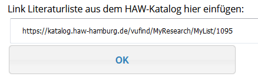
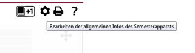
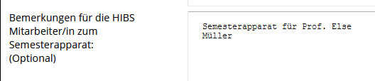
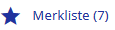
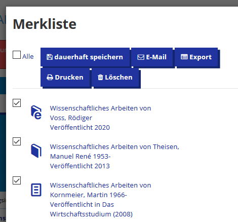
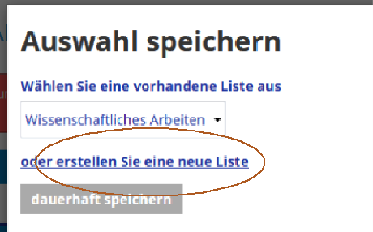
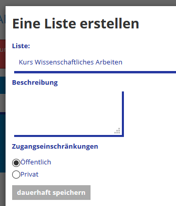
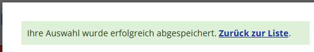
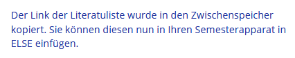

ELSE Nutzung für Lehrende:
Hinweis:
Nur Medien im Status „aktiv“ sind auch für die Studierenden sichtbar.
1. Um Medien in den Semesterapparat einzubinden, benutzen Sie das Icon „Neues Medium hinzufügen“
2. Über den Button „Im HAW-Katalog recherchieren und Literaturliste erstellen“ wechseln Sie in den HAW-Katalog.
3. Im HAW-Katalog müssen Sie sich zunächst mit Ihrer Bibliothekskennung anmelden und können dann eine Literaturliste erstellen. Sie können sowohl Bücher und
e-Books als auch Artikel in die Literaturliste aufnehmen. – Weitere Infos zum Erstellen einer Literaturliste finden Sie direkt im HAW-Katalog.
4. Den link der Literaturliste fügen Sie dann in Ihren Semesterapparat in ELSE ein. 
5. Nun wird jedes Medium in Ihren Semesterapparat aufgenommen.
Je nach Medientyp haben Sie versch. Optionen:
o Print-Bücher können entweder als reine Literaturhinweise aufgenommen werden (diese sind sofort „aktiv“)
oder für einen physischen Semesterapparat in der Fachbibliothek vor Ort bestellt werden.
Im zweiten Fall wird dieses Buch von den Bibliotheksmitarbeiter*innen bearbeitet und ist erst „aktiv“, wenn es im Semesterapparat der Fachbibliothek zur Verfügung
steht.
o E-Books und E-Artikel aus dem Bestand des HIBS sind sofort „aktiv“. Hinweis: Diese E-Medien sind nur innerhalb des HAW-Netzes bzw. per VPN-Zugang nutzbar.
o Print-Artikel können im Moment nur als Literaturhinweise eingebunden werden. Ein Digitalisierungsservice für Print-Artikel
bzw. Auszüge aus Print-Büchern ist in Planung.
6. Bei allen Medien haben Sie die Möglichkeit, einen Hinweistext für Ihre Studierenden einzugeben.
7. Bei Print-Büchern, die in Ihrem physischen Semesterapparaten stehen sollen und durch die Bibliotheksmitarbeiter*innen bearbeitet werden müssen, haben Sie außerdem
die Möglichkeit, Anmerkungen für die Bibliothek einzutragen.
8. Finden Sie bei Ihrer Suche nicht den gewünschten Titel, können Sie einen Erwerbungsvorschlag abgeben (Button „Erwerbungsvorschlag für den Semesterapparat“).
9. Die Reihenfolge der Medien in Ihrem Semesterapparat können einfach per drag&drop verändern werden.
10. Mit dem Icon „Bearbeiten“ können Sie
o die allgemeinen Informationen des Semesterapparates bearbeiten (z.B. Änderung der voreingestellten Fachbibliothek oder des Semesters),
o die Importfunktion nutzen (s. 14.),
o Hinweise für die Studierenden bzw. das Bibliothekspersonal eintragen.
11. Über das Icon „Rückgabe“
(bei Print-Büchern, die sich im physischen Semesterapparat befinden)
bzw. „Deaktivieren“ (bei
E-Books und Literaturhinweisen) können Sie einzelne Titel aus ELSE entfernen (lassen).
12. Bei Print-Büchern wird darüber hinaus der jeweils aktuelle Bearbeitungszustand des Mediums angezeigt:
o neu bestellt (von Ihnen neu in Ihr ELSE aufgenommen)
o wird bearbeitet (von der zuständigen HIBS Mitarbeiterin)
o ist aktiv (für die Studierenden in der ELSE-Liste sichtbar)
o wird entfernt (wurde von Ihnen zurückgegeben, oder die Ausleihfrist ist abgelaufen)
o inaktiv (für die Studierenden in der ELSE-Liste nicht sichtbar)
13. Die Print-Bücher im physischen Semesterapparat werden für das aktuelle Semester dort vorgehalten und danach wieder in den normalen Bibliotheksbestand einsortiert.
14. Falls Sie den Inhalt einer ELSE-Liste auch für das folgende Semester verwenden wollen, können Sie diesen importieren (Funktion „Export“ / „Import“ bei „Bearbeiten der allgemeinen Infos des Semesterapparates“)
ELSE Nutzung für Tutor*innen:
1. Wenn Sie Tutor*in sind und für eine*n Lehrende*n einen Semesterapparat anlegen möchten, müssen Sie für den entsprechenden EMIL-Raum Schreibrechte besitzen.
2. Der Workflow ist der gleiche wie oben beschrieben.
Die Literaturliste legen Sie dann nicht im Bibliothekskonto des/der Lehrenden an, sondern in Ihrem eigenen, d.h. Sie
benötigen Ihre Bibliothekskennung.
3. Zusätzlich füllen Sie bitte bei den allgemeinen Angaben des Semesterapparats

das Feld „Bemerkungen für die HIBS-Mitarbeiter*in…“ aus, für
wen dieser Semesterapparat angelegt wird, z.B. „Semesterapparat für Prof. Else Müller“

Stand: Januar 2021
ELSE Nutzung für Tutor*innen:
1. Wenn Sie Tutor*in sind und für eine*n Lehrende*n einen Semesterapparat anlegen möchten, müssen Sie für den entsprechenden EMIL-Raum Schreibrechte besitzen.
2. Im EMIL-Lernraum legen Sie einen Semesterapparat wie folgt an:
- Aktivität hinzufügen
- ELSE auswählen
-
Speichern und zum … zurück
3. Um Medien in den Semesterapparat einzubinden, benutzen Sie das Icon „Neues Medium hinzufügen“
4. Über den Button „Im HAW-Katalog recherchieren und Literaturliste erstellen“ wechseln Sie in den HAW-Katalog.
5. Im HAW-Katalog müssen Sie sich zunächst mit Ihrer eigenen Bibliothekskennung anmelden (Sie benötigen nicht die Bibliothekskennung des Lehrenden) und können dann
eine Literaturliste erstellen. Sie können sowohl Bücher und e-Books als auch Artikel in die Literaturliste aufnehmen.
6. Eine Literaturliste erstellen:
Führen Sie Ihre Recherche im HAW-Katalog durch und markieren Sie alle gewünschten Medien mit dem Stern-Symbol
.
Durch Klick auf die
können Sie Einträge auswählen und „dauerhaft speichern“:

Nun können Sie neue Liste erstellen:

Vergeben Sie einen Namen und setzen Sie die Zugangsbeschränkungen auf „Öffentlich“:

Nach „dauerhaft speichern“ erscheint die folgende Meldung. Wechseln Sie „Zurück zur Liste“…

…und klicken Sie dort auf:
Sie sollten dann folgende Bestätigung sehen:

Info: Der Listen-Link besteht aus der vollständigen Adresse der Literaturliste, z.B.:
„https://dev.haw.beluga-core.de/vufind/MyResearch/MyList/123“
Die Medien werden dann einzeln Ihrem Semesterapparat hinzugefügt und Sie können sie annotieren oder bearbeiten.
8. Nun wird jedes Medium in Ihren Semesterapparat aufgenommen.
Je nach Medientyp haben Sie versch. Optionen:
a. Print-Bücher können entweder als reine Literaturhinweise aufgenommen werden (diese sind sofort „aktiv“) oder für einen physischen Semesterapparat in der Fachbibliothek vor Ort bestellt werden.
Im zweiten Fall wird dieses Buch von den Bibliotheksmitarbeiter*innen bearbeitet und ist erst
„aktiv“, wenn es im Semesterapparat der Fachbibliothek zur Verfügung steht.
b. E-Books und E-Artikel aus dem Bestand des HIBS sind sofort „aktiv“. Hinweis: Diese E-Medien sind nur innerhalb des HAW-Netzes bzw. per VPN-Zugang nutzbar.
c. Print-Artikel können im Moment nur als Literaturhinweise eingebunden werden. Ein Digitalisierungsservice für Print-Artikel bzw. Auszüge aus Print-Büchern ist
in Planung.
9. Bei allen Medien haben Sie die Möglichkeit, einen Hinweistext für die Studierenden einzugeben.
10. Bei Print-Büchern, die in Ihrem physischen Semesterapparaten stehen sollen und durch die Bibliotheksmitarbeiter*innen bearbeitet werden müssen, haben Sie außerdem
die Möglichkeit, Anmerkungen für die Bibliothek einzutragen.
11. Finden Sie bei Ihrer Suche nicht den gewünschten Titel, können Sie einen Erwerbungsvorschlag abgeben (Button „Erwerbungsvorschlag für den Semesterapparat“).
12. Die Reihenfolge der Medien in Ihrem Semesterapparat können einfach per drag&drop verändern werden.
13. Mit dem Icon „Bearbeiten“ können Sie die allgemeinen Informationen des Semesterapparates bearbeiten.
Tragen Sie hier im Feld „Bemerkungen für die HIBS-Mitarbeiter*in…“ ein, für wen dieser Semesterapparat angelegt wird, z.B. „Semesterapparat für Prof. Else Müller“,
damit die Bibliotheksmitarbeiter*innen den Semesterapparat korrekt dem Namen des/der Lehrenden zuordnen können.
An dieser Stelle können darüber hinaus
a. weitere allgemeine Informationen bearbeitet werden (z.B. Änderung der voreingestellten Fachbibliothek oder des Semesters),
b. die Importfunktion genutzt werden (s. 17.),
c. Hinweise für die Studierenden bzw. das Bibliothekspersonal eingetragen werden.
14. Über das Icon „Rückgabe“
(bei Print-Büchern, die sich im physischen Semesterapparat befinden)
bzw. „Deaktivieren“ (bei
E-Books und Literaturhinweisen) können Sie einzelne Titel aus ELSE entfernen (lassen).
15. Bei Print-Büchern wird darüber hinaus der jeweils aktuelle Bearbeitungszustand des Mediums angezeigt:
a. neu bestellt (von Ihnen neu in Ihr ELSE aufgenommen)
b. wird bearbeitet (von der zuständigen HIBS Mitarbeiterin)
c. ist aktiv (für die Studierenden in der ELSE-Liste sichtbar)
d. wird entfernt (wurde von Ihnen zurückgegeben, oder die Ausleihfrist ist abgelaufen)
e. inaktiv (für die Studierenden in der ELSE-Liste nicht sichtbar)
16. Die Print-Bücher im physischen Semesterapparat werden für das aktuelle Semester dort vorgehalten und danach wieder in den normalen Bibliotheksbestand einsortiert.
17. Falls Sie den Inhalt einer ELSE-Liste auch für das folgende Semester verwenden wollen, können Sie diesen importieren (Funktion „Export“ / „Import“ bei „Bearbeiten der allgemeinen Infos des Semesterapparates“)